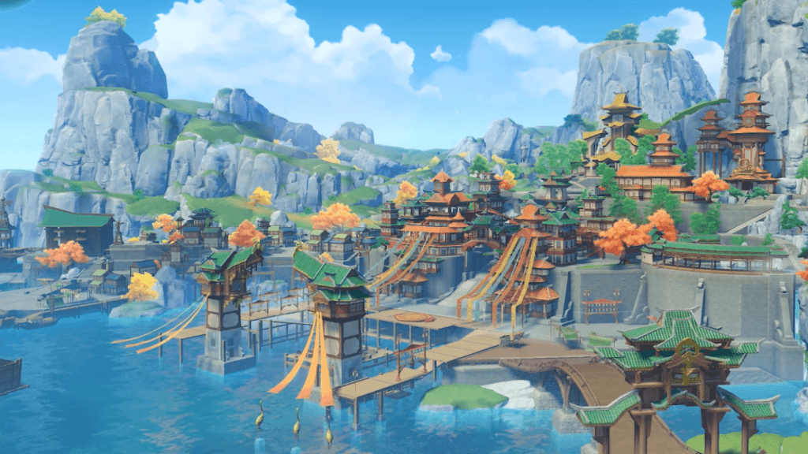
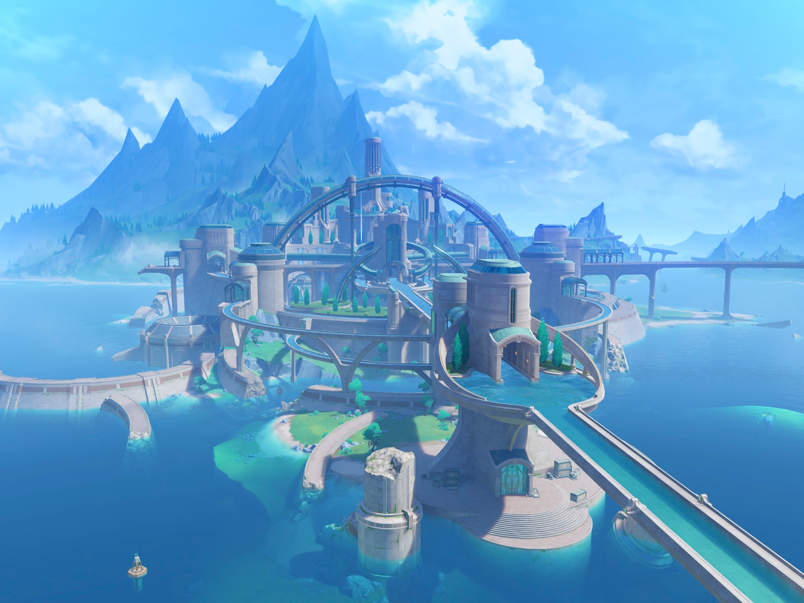

Mondstadt
Una ciudad de libertad que se encuentra al noreste de Teyvat . Desde entre montañas y llanuras abiertas, las brisas despreocupadas llevan el aroma de los dientes de león, un regalo del dios Anemo, Barbatos, a través del lago Cider hasta Mondstadt, que se encuentra en una isla en medio del lago.

Liyue
Un puerto generoso que se encuentra al este de Teyvat . Las montañas se yerguen altas y orgullosas junto al bosque de piedra, que, junto con las llanuras abiertas y los ríos animados, conforman el paisaje generoso de Liyue, que muestra su belleza única durante cada una de las cuatro estaciones.
Sumeru
La ciudad de los eruditos situada en la parte centro-occidental de Teyvat. Una nación fantástica con una exuberante selva tropical y un desierto árido, donde crecen y están enterrados innumerables frutos de la sabiduría. Ya sea que los Viajeros viajen desde lejos a través del bosque para llegar a la ciudad de la academia o se adentren en el desierto para descubrir las ruinas históricas del desierto rojo, aquí los espera una gran cantidad de conocimientos valiosos.

Fontaine
Un mar terrestre en el centro de Teyvat. Siguiendo la dirección de corrientes puras, atravesando el desierto, las profundidades de los bosques y la inmensidad del mar de arena, llegando al origen de todas las aguas del continente. En lo alto de la cascada, en las profundidades de la capital sobre el mar terrestre... una historia que nunca se ha escuchado, una leyenda que ha sido olvidada, como un reino perdido hundido bajo las olas, anhelando un bardo que cante sus canciones ahogadas.
